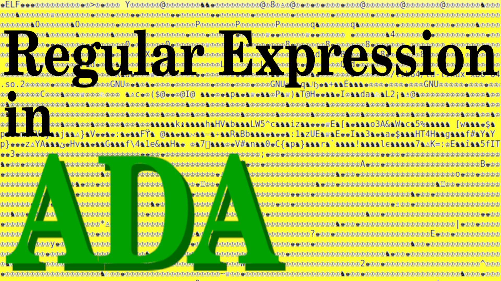

Top Prev Next Up Down
Regular Expression in ADA, Y2018-Text-project
2.5.0
An implementation of Regular Expression for the ADA language and
based on Unicode.org defined codepoints and General Categories of
characters of this world.
Project documentation
Why ? - Reason for and technical solutions in the project (PDF)
Package hierarchy - Y2018.Text
package presentation
Content of the site
Examples (in reverse order)
Y2018-Text project as a tar archive and
SHA-256.
The project has been tested on
Raspberry PI (ARM)/Raspbian with GNAT Ada 2012
Linux Ubuntu 22.04.2 LTS 64-bit with GNAT Ada 2012
and based on Unicode.org version 15 for codepoints
